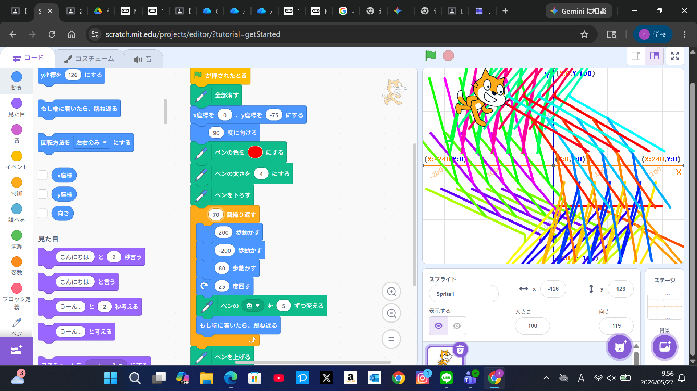
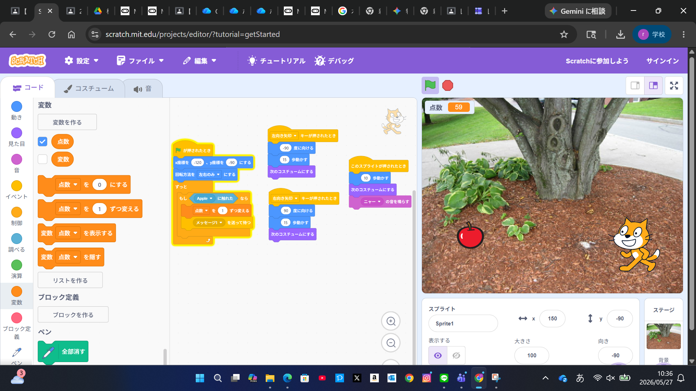

1週目のレポート ： 公大高専１年実習I-1
3a班3番 荒畑依真
第1週目
1-1 サイエンスアート

1.内容
サイエンスアートというペンの動きや色をプログラミングして、その軌跡で絵や模様を表現するものを学んだ。
座標を一つずつ指定しながらペンを動かしていくことで複雑な模様や図形を描くことができる。
2.感想
線の太さやパターンを自由に設定できるので、いろいろな模様を作ることができて楽しかった。
また、数値や命令を少し変えるだけで、全く違う模様になるのが面白く、
それぞれのブロックがどのように働くのか考えながら取り組むべきだと感じた。
1-2 ゲーム

1.内容
学習した内容を説明する文章を
プレイヤーがキャラクターを左右に動かし、上から落ちてくるリンゴを集めて点数を伸ばしていくゲームを作成した。
リンゴは毎回異なる速さで落下するように設定し、キャラクターはキーボード操作で動かせるようにした。
これにより、簡単には高得点を取れないゲームにすることができた。
2.感想
思った通りにプログラムが動かないこともあったが、試行錯誤しながら完成させることができて達成感があった。
今回学んだことを生かして、次はもっと複雑なゲームも作ってみたいと思った。
1-3 ホームページ作成
私のホームページ
1.内容
HTMLを用いて自己紹介ページを作成した。
見出しや文章をコードで入力し、サーバーに公開することで、他の人がブラウザから閲覧できるようにした。
ページには自分の趣味や好きなこと、得意なことなどを記載し、自分について知ってもらえる内容にした。
2.感想
HTMLを使って自己紹介ページを作成し、コードを書くだけでホームページが自分でも作れることに驚いた。
内容を変更するとすぐに表示が変わるため、楽しく取り組むことができた。
各ページへのリンク
1週目のレポート
2週目のレポート
3週目のレポート
私のホームページ